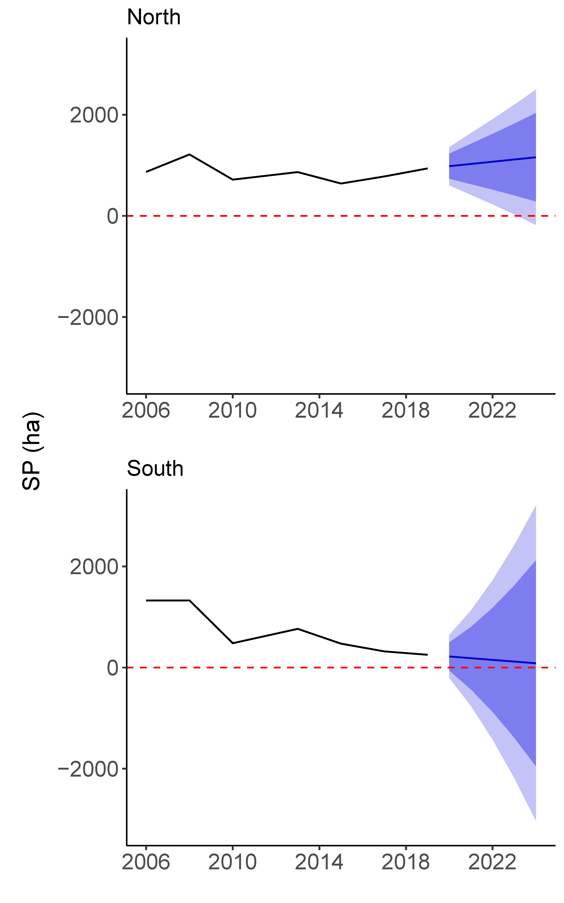
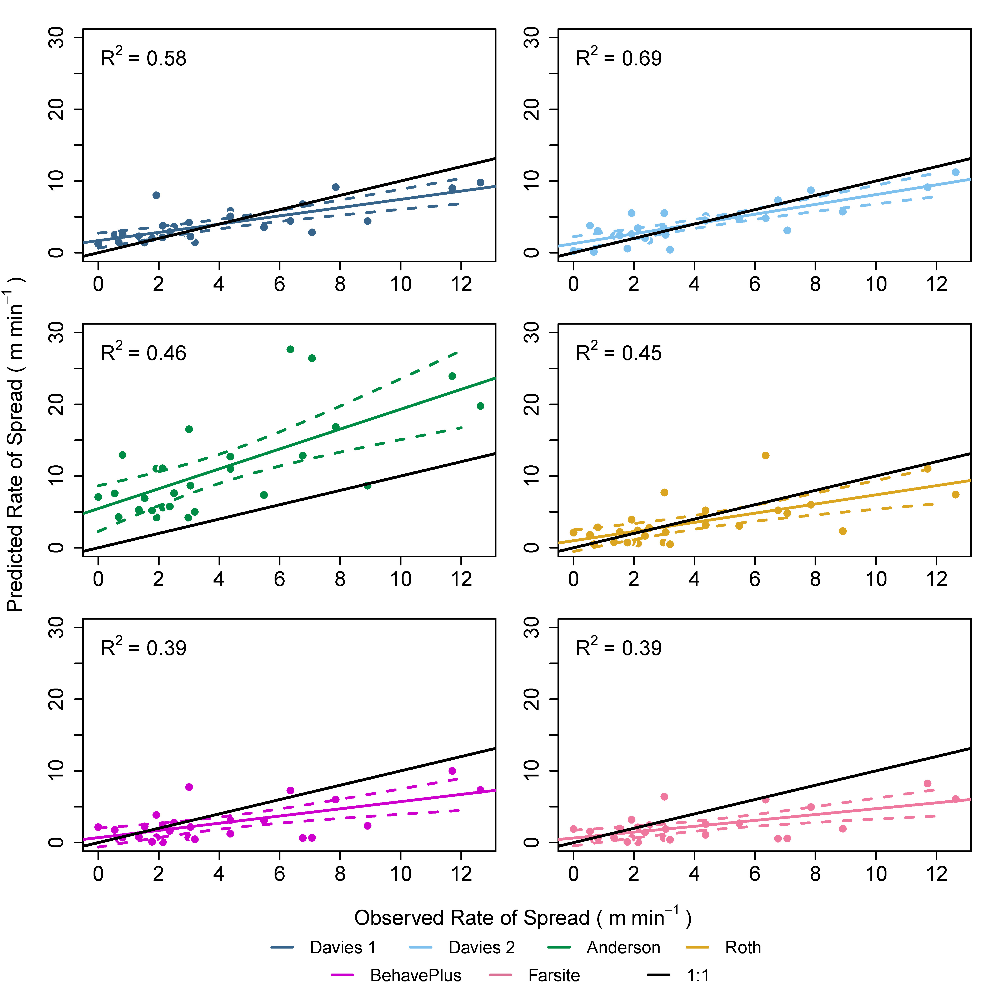
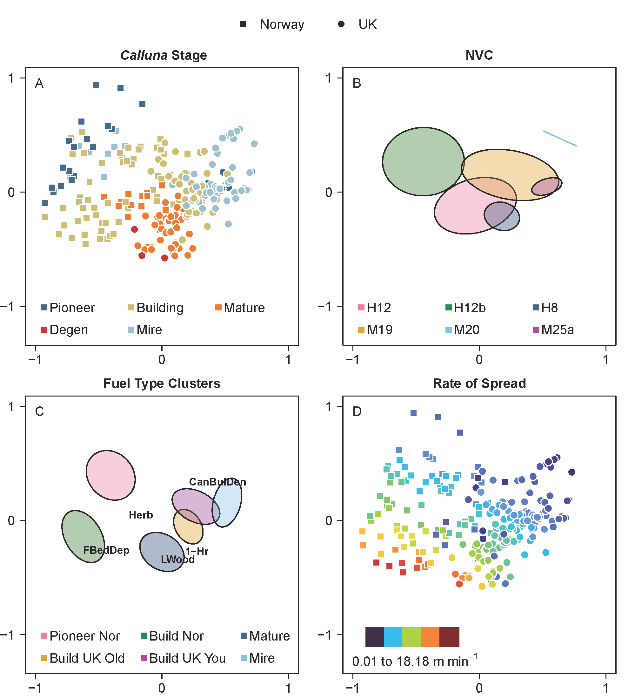
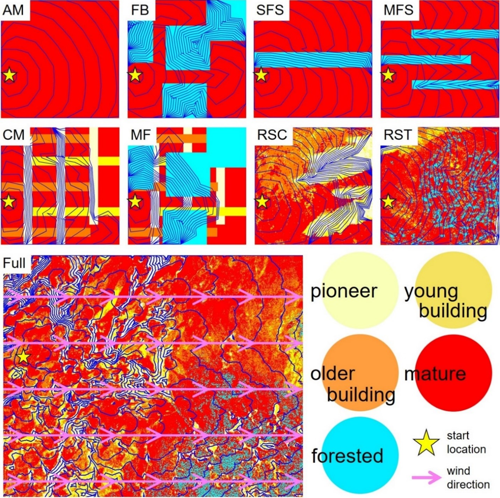

2022 - TBD (PhD Research) - They're Caterpillars, not Worms
Insect herbivores represent the most species-diverse grouping on the planet, with many species among the most common and widespread living organisms (Wiens et al., 2015). Despite ample opportunity for study, drivers that lead to the intense speciation of insect herbivores remain relatively unclear. Furthermore, roughly 90% of all insect herbivores are considered to have a specialized diet consisting of few host species typically from the same plant family while the other 10% consume a wide range of host species (Forister et al., 2015). There has been effort over the past 60 years to describe possible avenues for this trend, such as through restriction over time to specific hosts leading to adaptive radiation (Ehrlich and Raven, 1964). However, early theory has failed to predict many of the observations of host plant usage and trade-offs, or lack thereof, between generalists and specialists in entomological literature (Hardy and Otto, 2014; Singer and Stireman, 2005). Historically, insect communities have been modeled as bi-trophic interactions of either herbivore-insect or insect-predator couplings, to much debate over their relative importance (Singer and Stireman, 2005). Without a holistic consideration of the full range of interactions in a given system, predictions of these studies have often been biased toward one argument or the other without support by further research. These ideologies were dominant until around 40 years ago when focus shifted to examining communities by combining bottom-up and top-down interactions into the tri-trophic niche theory (Mooney et al., 2012). While this has elucidated many new patterns as well as drivers of community structure, there are still fundamental gaps in our understanding of these complex systems. For example, Vidal and Murphy (2018) found that a generalist diet dampened both bottom-up and top-down ecological forces in contrast to the widely regarded notion of “jack of all trades, master of none.” It appears that generalists suffer few of the tradeoffs predicted across literature, which has led many to speculate as to why the diet breadth gap between specialists and generalists exists rather than encompassing a more evenly spread spectrum (Forister et al., 2015).
Spring 2022 - The Grass is Always Greener
Salt marshes are globally important ecosystems but due to the impacts of global change, many of these ecosystems have been lost or transformed. There have been previous attempts to broadly quantify salt marsh communities, specifically the ubiquitous grasses which serve as foundation species (Spartina alterniflora and Spartina patens), the latter of which being less tolerant of sea-level rise. However, few researchers have used high-resolution geospatial imagery to quantify fine-scale changes in the distribution of grasses. Thus, we developed a novel, easy-to-use method of classifying geospatial data with supervised machine learning that enables a user to iteratively build datasets based on their own ecological knowledge. Our methods allowed us to characterize immense regions (two geospatially proximal areas, >7,000 ha each) of critical salt marshes on the New Jersey coast and to evaluate fine-scale (1m × 1m) community transformations in response to global change using several years of historical imagery. We achieved strikingly high classification accuracy for all years, with upwards of 98.75% correct for our final model in 2019, and up to 100% of our main species of interest, S. patens. These results confirm the viability of our classification methods for broad-scale community characterization. Analyzing classifications from 2006 to 2019, we found vastly different patterns of community response in our target marshes. One marsh appeared to experience very little change while the other experienced an incredible 81.17% (1,087 ha) reduction of S. patens. These results signify the importance for future broad-scale ecological studies to not generalize across landscapes of an ecosystem-type. Our methods can thus be used to capture the full range of variation in global change responses.
2019-2021 (MS Research) - We Didn't Start the Fire
The evaluation of fire behavior prediction models is an important step forward in understanding the appropriate tool to use in a given ecosystem or climate. Furthermore, the generation of a robust set of fire behavior data across comprehensive fuel structures and fire weather allows for a deeper understanding of how ecology and climate impact fire behavior prediction. When these evaluations are combined, inferences and suggestions can be made that have the power to aid future research and management decisions. The results of this project are intended to provide guidance for future research and management within the moorlands and heathlands of the UK and Norway. Further, it is hoped that the James Hutton Institute of Dundee, Scotland, will be able to compare their characterization of vegetation and fire weather with this project’s prediction of fire behavior to aid in the creation of Scotland’s fire danger rating system (Taylor et al., 2019).
Key findings from this project indicate that the Rothermel model provides an accurate representation of fire behavior for oceanic heathlands and moorlands, as compared to their ecosystem-specific empirical models (Davies et al., 2009). This is important as the Rothermel model allows a user to alter fuel input chemistry and physics (Andrews, 2018) which makes it potentially more apt to predict fire behavior across a wider range of fuel structures within the same ecosystem. Further, fire behavior predictions across all generated landscapes, and across all fire weather scenarios, indicate that the lowest risks for adverse fire behavior exist in landscapes with the greatest heterogeneity (e.g., landscapes which experience fuel management, typically in the form of managed burning). This means that current attempts to reforest, or “rewild,” landscapes that occur across UK heathlands, moorlands, and peatlands could result in an increase in short-term wildland fire risk.
The management of UK and Norwegian heathlands and moorlands for livestock grazing is an important land-use that was not considered for the purposes of this study which overlaps fire management in many areas (Davies et al., 2016a; and Vandvik et al., 2005). Vandvik et al. (2005) found that grazing and fire do not have additive effects on community diversity, rather that the combination provided ecosystems with a complex range of disturbances that created a large amount of niche variance. For British heathalnds, Bullock and Pakeman (1997) found that introduction of grazing on Calluna increased plant and bryophyte species richness and relative covers while reducing the amount of highly flammable dead fuels. These findings, in conjunction with the lower diversity of mosses and plant species richness found in birch forests (Mitchell et al., 2007), exemplify the necessity to preserve current management practices that combine the disturbances of grazing and managed burning.
In the outset of this project, there was an intense learning curve to properly implement various different types of fire behavior prediction models. The alignment of these models, in many cases, was a huge success. Further, this project was originally intended to encompass data collection in oceanic heathlands for the purposes of fire behavior modeling. Global occurrences during the breadth of this project, however, prevented traveling to foreign countries. Another important success of this project involved the assimilation of fuels data into characteristics useable by the Rothermel model, especially when considering differences in the way fuel data were collected across different projects. This process was incredibly time-consuming and intensive, involving a detailed and comprehensive knowledge of varying fuel data samples. Other limitations of this project included the simplistic nature of fire behavior prediction using the R ‘Rothermel’ package (Vacchiano and Ascoli, 2015) where only rates of spread could be produced. Other measures of fire behavior are often used to describe impacts on ecosystems, such as fireline intensity, which would have been beneficial to report on in this study.
The results of this project provide a baseline for an array of potential future work. For example, more work needs to be done to understand whether the Rothermel model tolerably predicts fire behavior in other novel ecosystems of the world, not just in the UK and Norway’s oceanic climates. More work should also be done that aligns transitions of Calluna-dominated landscapes with areas of birch forestland, so that the assertions made by this study may either be corroborated or rejected. Further, any future research should aim to collect fuels in-field for the purposes of expanding the fire behavior predictions this study provides for oceanic climates.
Summer 2018 - Bogged Down
Nam sapien ante, varius in pulvinar vitae, rhoncus id massa. Donec varius ex in mauris ornare, eget euismod urna egestas. Etiam lacinia tempor ipsum, sodales porttitor justo. Aliquam dolor quam, semper in tortor eu, volutpat efficitur quam. Fusce nec fermentum nisl. Aenean erat diam, tempus aliquet erat.
Etiam iaculis nulla ipsum, et pharetra libero rhoncus ut. Phasellus rutrum cursus velit, eget condimentum nunc blandit vel. In at pulvinar lectus. Morbi diam ante, vulputate et imperdiet eget, fermentum non dolor. Ut eleifend sagittis tincidunt. Sed viverra commodo mi, ac rhoncus justo. Duis neque ligula, elementum ut enim vel, posuere finibus justo. Vivamus facilisis maximus nibh quis pulvinar. Quisque hendrerit in ipsum id tellus facilisis fermentum. Proin mauris dui, at vestibulum sit amet, auctor bibendum neque.